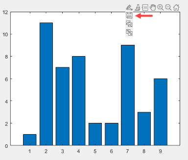
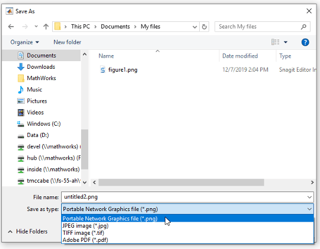
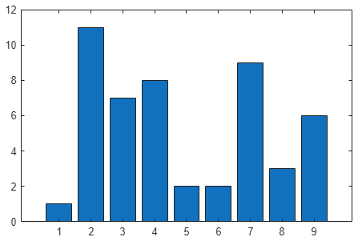
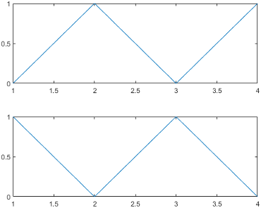

Save Plot as Image or Vector Graphics File
You can save plots as images or as vector graphics files from the figure toolstrip (since R2025a), by selecting the export button
 in the axes toolbar, or by calling the
in the axes toolbar, or by calling the
exportgraphics function. When deciding between the two types of
content, consider the quality, file size, and formatting requirements for the document
you are placing the file into.
Images are supported in most applications. They are useful for representing pictorial images and complex surfaces. However, because they made up of pixels, they do not always scale well when you print or display them on other devices that have different resolutions. In some cases, you might need to save an image with enough resolution to satisfy certain quality requirements. Higher resolution files tend to be larger, which can make them difficult to share in an email or upload to a server. It can also be difficult to edit the lines and text in an image without introducing artifacts.
Vector graphics files contain instructions for drawing lines, curves, and polygons. They are useful for representing content consisting of lines, curves, and regions of solid color. These files contain high quality content that is scalable to any size. However, some surfaces and mesh plots are too complicated to be represented using vector graphics. Some applications support extensive editing of vector graphics files, while other applications support only resizing the graphics.
Regardless of whether you save your plots as images or as vector graphics files, you can get the best results by finalizing your content in the MATLAB® figure before saving your file.
Save Plots Using Figure Toolstrip
Since R2025a
To save a plot from the figure toolstrip, in the Figure tab, click the top half of the Save As button. In the Save As dialog box, select a folder and file type, and enter a file name. PDF files are saved as full-page PDFs. Image files, such as JPEG and PNG files, are saved with a resolution of 150 dots-per-inch (DPI).
To save a figure and specify options, such as resolution, width, and height, click the bottom half of the Save As button, and the select the Export to menu item. For more information on the options you can specify, see Print or Export Figure from Figure Toolstrip.
Save Plots Using Axes Toolbar
To save a plot using the axes toolbar, place your cursor over the export button
 in the axes toolbar. The toolbar appears when you
move your cursor to the upper right corner of the axes. The export button supports
three image formats (PNG, JPEG, and TIFF), as well as PDF files, which can contain
images or vector graphics, depending on the content in the axes.
in the axes toolbar. The toolbar appears when you
move your cursor to the upper right corner of the axes. The export button supports
three image formats (PNG, JPEG, and TIFF), as well as PDF files, which can contain
images or vector graphics, depending on the content in the axes.
For example, create a bar chart. Save the chart to a file by placing the cursor
over the export button  in the axes toolbar and selecting the first item
in the drop-down list.
in the axes toolbar and selecting the first item
in the drop-down list.
bar([1 11 7 8 2 2 9 3 6])

MATLAB displays the Save As dialog box with the file type options.

When you use the export button to save a plot, the output is tightly cropped around the axes content, including any legends or colorbars. The output does not include content outside the axes, such as other axes in the figure.
If the figure contains multiple plots in a tiled chart layout, you can save all
the plots together by moving the toolbar to the layout. To move the toolbar, call
the axtoolbar function and specify the
TiledChartLayout object as an input argument. Then hover over
the export button in the toolbar. The toolbar appears when you hover over the upper
right corner of the layout
Save Plots Programmatically
To save plots programmatically, use the exportgraphics function. The saved content is tightly cropped around
the axes with minimal white space. All UI components and adjacent containers such as
panels are excluded from the saved content. The exportgraphics
function supports three image formats (PNG, JPEG and TIFF) and four formats that
support both vector content (SVG, PDF, EPS, and EMF). The PDF format supports
embedding fonts.
For example, create a bar chart and get the current figure. Then save the figure as a PNG file. In this case, specify an output resolution of 300 dots per inch (DPI).
bar([1 11 7 8 2 2 9 3 6]) f = gcf; exportgraphics(f,'barchart.png','Resolution',300)

If you specify a file name with a .pdf,
.eps, or .emf extension, MATLAB stores either an image or vector graphics depending on the content in
the figure.
You can control whether the file contains an image or vector graphics by
specifying the 'ContentType' name-value pair argument. For
example, save the content in the current figure as a PDF containing vector
graphics.
exportgraphics(gcf,'vectorfig.pdf','ContentType','vector')
To save multiple plots in a figure, create a tiled chart layout and pass the
TileChartLayout object to the
exportgraphics function. For example, create a 2-by-1 tiled
chart layout t. Place two axes in the layout by calling the
nexttile function, and plot into the axes. Then, save both plots as
an EPS file by calling the exportgraphics function with
t as the first argument.
t = tiledlayout(2,1);
nexttile
plot([0 1 0 1])
nexttile
plot([1 0 1 0])
exportgraphics(t,'twoplots.eps')
Open Saved Plots in Other Applications
You can open the files you save in other applications such as Microsoft® Word or LaTeX.
To add a plot to a LaTeX document, first save the plot as an EPS file using the
exportgraphics function. Then add the
\includegraphics element to the LaTeX document. For
example:
\documentclass{article}
\usepackage{graphicx}
\begin{document}
\begin{figure}[h]
\centerline{\includegraphics[height=10cm]{twoplots.eps}}
\caption{Plots from MATLAB}
\end{figure}
\end{document}
See Also
nexttile | tiledlayout | exportgraphics | copygraphics